Run the disturbance model for a spacecraft with two rotating arrays.
Define the orbit a priori and call the disturbance model in batch. The sun vector is held constant. The spacecraft - body 1 - points at the sun while the arrays - bodies 2 and 3 - rotate to point at the sun.
Before the disturbances are calculated, the orientation is visualized in a loop using DrawSCPlanPlugIn.
------------------------------------------------------------------------ See also Disturbances, BuildTwoArraySC, Q2Mat, QLVLH, Date2JD, Period, RVFromKepler, SunV1, EarthEnvironment ------------------------------------------------------------------------
Contents
%------------------------------------------------------------------------------- % Copyright (c) 1998-2003, 2022 Princeton Satellite Systems, Inc. % All rights reserved. %------------------------------------------------------------------------------- % Since version 5.5 (2003) % 2016.1 Add visualization of Earth and Sun vectors with DrawSCPlanPlugIn to % verify correct solar panel pointing % 2022.1 Use EarthEnvironment which computes eclipses % 2023.1 Correct Julian date (spring equinox) %-------------------------------------------------------------------------------
Load the CAD model of the demo spacecraft
%----------------------- g = load('TwoArraySC')
g =
struct with fields:
body: [1×3 struct]
component: [1×34 struct]
mass: [1×1 struct]
name: 'Demo Spacecraft'
omega: [3×1 double]
q: [4×1 double]
qLVLH: [4×1 double]
rECI: [3×1 double]
radius: 3.735
subsystem: [1×6 struct]
units: 'mks'
vECI: [3×1 double]
Ephemeris
%---------- jD = FindSolsticeOrEquinox( 'spring equinox', 2022 ); [uSun, rSun] = SunV1( jD );
Disturbances
%------------- d = Disturbances('defaults'); solarFlux = 1367; % Watts/m^2 d.s = solarFlux*uSun; d.shadow = false; d.units = 'm'; d.planet = 'earth';
Initialize the disturbance model
%--------------------------------- hD = Disturbances( 'init', g, d );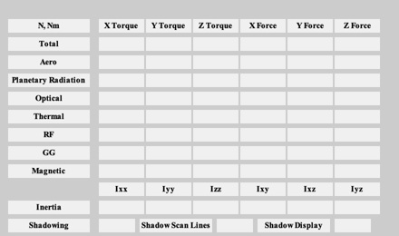
Do 100 samples in a circular orbit
%---------------------------------- nSamp = 100; rOrbit = 7000; period = Period(rOrbit); d.tSamp = period/nSamp; theta = linspace(0,2*pi,nSamp); %c = cos(theta); %s = sin(theta);
A circular orbit with LVLH pointing
%------------------------------------- t = linspace(0,period,nSamp); [r,v] = RVFromKepler([rOrbit 0.5 0 0 0 0],t); qLVLH = QLVLH( r, v ); d = EarthEnvironment(r,v,JD2Array(jD,t),d); % Create the transformation matrix arrays. % In this case we are using angles and % axes. Visualize the result. %---------------------------------------- gD = g; gD.subsystem = []; for k = 1:nSamp g.body(1).bHinge(k).b = Q2Mat( qLVLH(:,k) )'; g.body(2).bHinge(k).angle = theta(k); g.body(2).bHinge(k).axis = 2; g.body(3).bHinge(k).angle = theta(k); g.body(3).bHinge(k).axis = 2; % Display gD.body(1).bHinge = g.body(1).bHinge(k); gD.body(2).bHinge = g.body(2).bHinge(k); gD.body(3).bHinge = g.body(3).bHinge(k); gD.rECI = d.r(:,k); gD.vECI = d.v(:,k); if k == 1 tag = DrawSCPlanPlugIn(gD); view(45,25) end DrawSCPlanPlugIn( 'vectors', tag, gD, uSun ); drawnow; end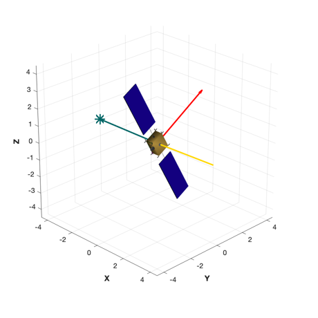
Run
%----- Disturbances( 'run', g, d, hD ); Figui; %-------------------------------------- % PSS internal file version information %-------------------------------------- % $Date$ % $Id: 3fd39905496d0d822dc0b522c8bde54e117b4996 $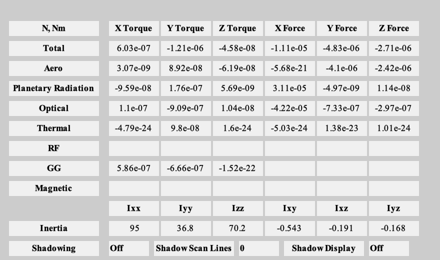 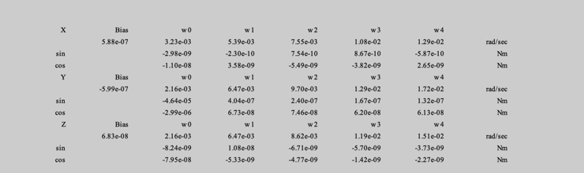 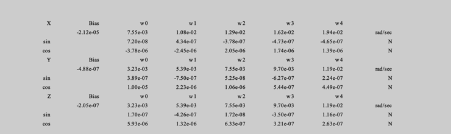 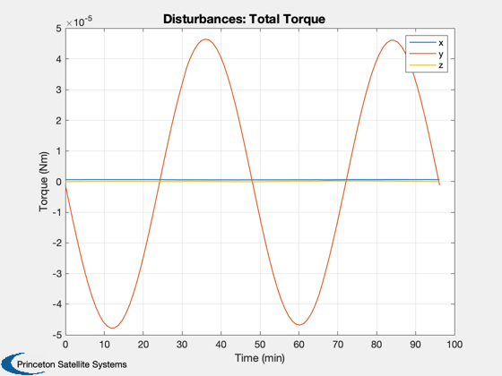 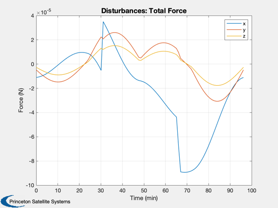 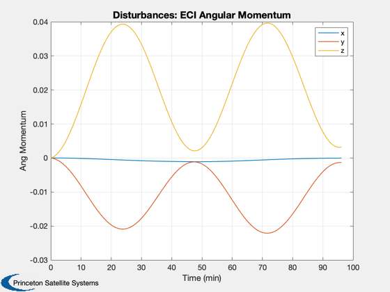 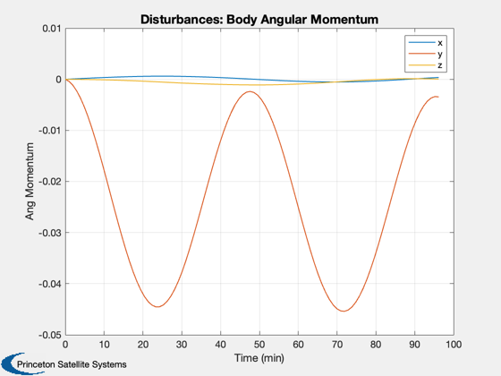 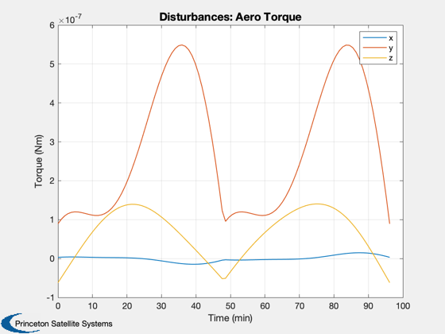 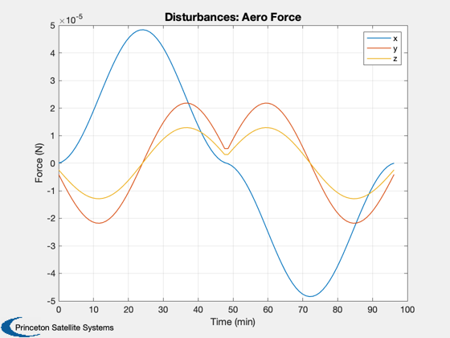 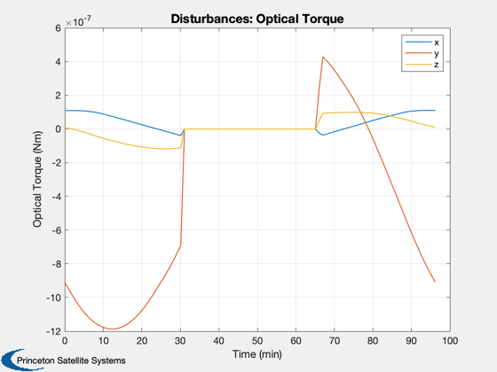 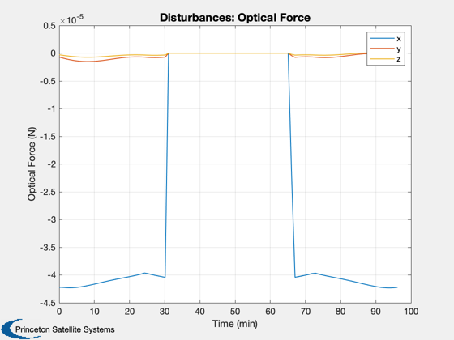 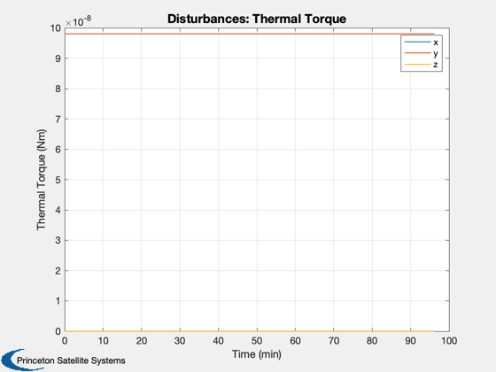 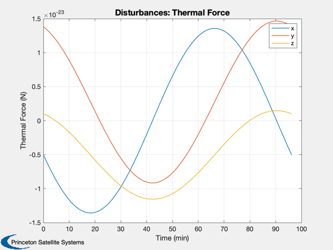 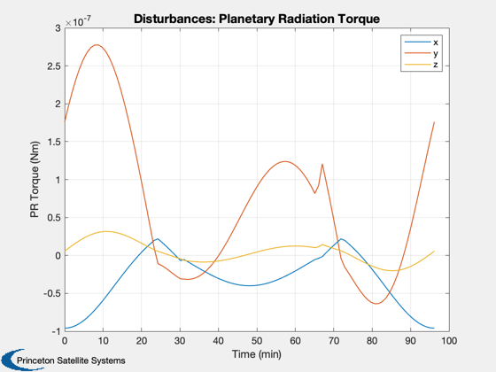 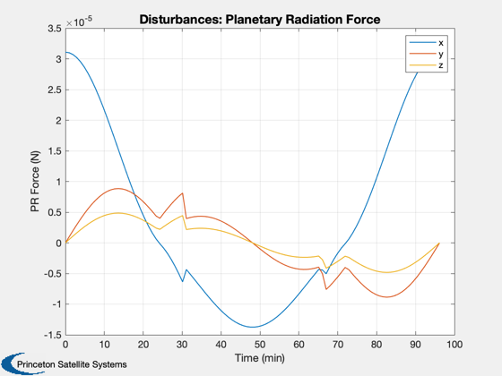 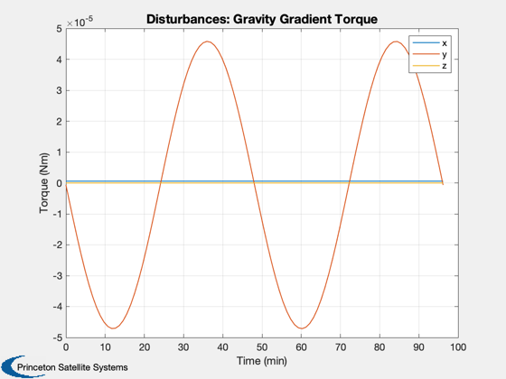 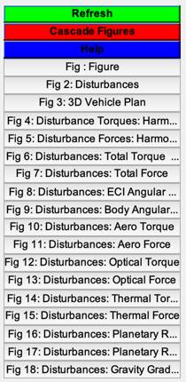